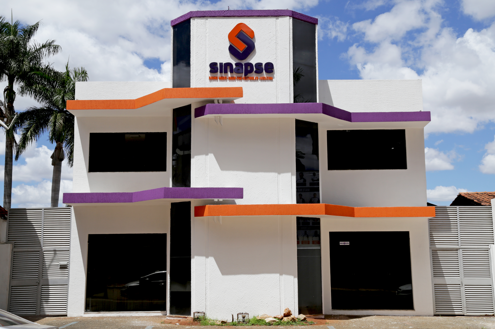
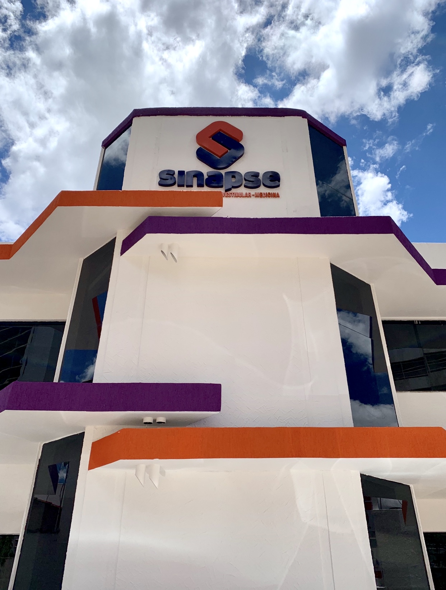

Novo estilo de colégio em Goiânia
7h às 18h
atendimento com rotina pensada para famílias e alunos
Goiânia
localização estratégica no Jardim Goiás
Foco real
ensino forte, acolhimento e direção experiente
Ensino que acolhe, desafia e prepara para os grandes vestibulares.
O Colégio Sinapse nasceu da visão de dois ex-diretores que decidiram criar uma escola mais próxima das necessidades reais dos alunos. Aqui, cada etapa da jornada é pensada para unir acolhimento, desenvolvimento acadêmico e preparação sólida para ENEM e vestibulares.
Atalhos rápidos para quem está pesquisando colégios em Goiânia:

Colégio Sinapse
Uma escola criada para preparar alunos com visão e direção.
Ensino com estratégia
da base ao alto desempenho
Olhar para cada aluno
Uma proposta que parte das necessidades, dificuldades e potencial de cada estudante.
Preparação consistente
Rotina voltada para resultados acadêmicos e construção de autonomia.
Estrutura com identidade
Um ambiente marcante, moderno e alinhado com a energia de uma escola que quer evoluir.
Presença em Goiânia
Atendimento local para famílias que procuram um colégio de referência na cidade.
Quem somos
Direção experiente
fundado por profissionais que conhecem a rotina escolar por dentro
Ensino com propósito
formação acadêmica com estratégia e suporte individual
Visão de futuro
preparo para etapas decisivas da vida estudantil
Um colégio que nasceu da experiência de quem já viveu a gestão escolar e decidiu fazer diferente.
O Colégio Sinapse surgiu da vontade de dois sócios, ex-diretores de outros colégios, que enxergaram a necessidade de construir um novo estilo de escola. A proposta nasceu com um objetivo claro: atender melhor os alunos, respeitar suas particularidades e criar um ambiente mais preparado para o presente e para o futuro.
Mais do que ensinar conteúdos, o Sinapse busca capacitar estudantes para os melhores vestibulares do Brasil e para o ENEM, sem perder de vista o acolhimento, a escuta e o acompanhamento próximo da jornada escolar.

Nossa essência
Educar com proximidade, disciplina e ambição acadêmica.
Áreas de ensino
Ensino pensado para fortalecer a base, amadurecer o aluno e ampliar seu desempenho.
O Sinapse atende famílias que procuram escolas de Ensino Fundamental e Médio em Goiânia com foco real em evolução acadêmica e preparação para o que vem depois.
Base sólida para crescer com segurança
Uma etapa estratégica para desenvolver rotina, responsabilidade, raciocínio e confiança antes dos desafios mais avançados.
- Fortalecimento acadêmico
- Construção de autonomia
- Acompanhamento próximo
Alta performance com direção e clareza
Conteúdo, disciplina e estratégia para preparar o aluno para ENEM, vestibulares e escolhas importantes da vida acadêmica.
- Foco em resultado
- Ritmo mais estratégico
- Preparação para vestibulares
Preparação para grandes vestibulares e ENEM
O projeto pedagógico foi desenhado para elevar a capacitação dos alunos e ajudá-los a disputar vagas nos melhores processos seletivos do país.
- Visão de longo prazo
- Exigência com acolhimento
- Cultura de conquista
Por que escolher
Um colégio para todos os tipos de alunos, com ensino mais humano e visão mais alta.
O diferencial do Colégio Sinapse está na combinação entre experiência de gestão, leitura individual do aluno e preparação acadêmica séria. A escola foi criada para atender melhor, orientar com mais precisão e formar estudantes prontos para desafios reais.
Tirar dúvidas com a equipeEscuta das necessidades
A proposta considera o ritmo, as dificuldades e o potencial de cada aluno para orientar a jornada com mais precisão.
Acolhimento com firmeza
Uma escola que se aproxima do estudante sem abrir mão de disciplina, compromisso e consistência.
Preparação contínua
O caminho até o vestibular começa antes da prova, com rotina bem orientada e repertório sólido.
Capacitação para alta performance
O objetivo é ampliar o nível acadêmico dos alunos para que estejam prontos para grandes oportunidades.
Estrutura e presença
Uma identidade visual forte para marcar o espaço onde futuros projetos de vida começam a ganhar forma.
O Colégio Sinapse transmite energia, seriedade e personalidade já na fachada. A combinação de roxo, laranja e linhas marcantes reforça a proposta de uma escola atual, memorável e feita para crescer com seus alunos.
Colégio em Goiânia com identidade própria
Para famílias que buscam um ambiente com presença, direção e proposta acadêmica clara.
Próximo passo
Agendar visita
Se sua família está procurando um colégio em Goiânia, o Sinapse está pronto para apresentar uma proposta de ensino mais próxima, estratégica e preparada para resultados.
Contato
Fale com a recepção, agende uma visita e conheça o Colégio Sinapse de perto.
Estamos no Jardim Goiás, em Goiânia, atendendo famílias que desejam um colégio com Ensino Fundamental II e Ensino Médio voltado para desenvolvimento real, preparação forte e acompanhamento próximo.
Endereço
Rua 52 n629, Quadra B-2, Lote 12-E, Jardim Goiás, Goiânia - GO, 74810-200
Telefone e WhatsApp
(62) 99969-0082
Horário de atendimento
Atendimento das 7h às 18h